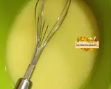
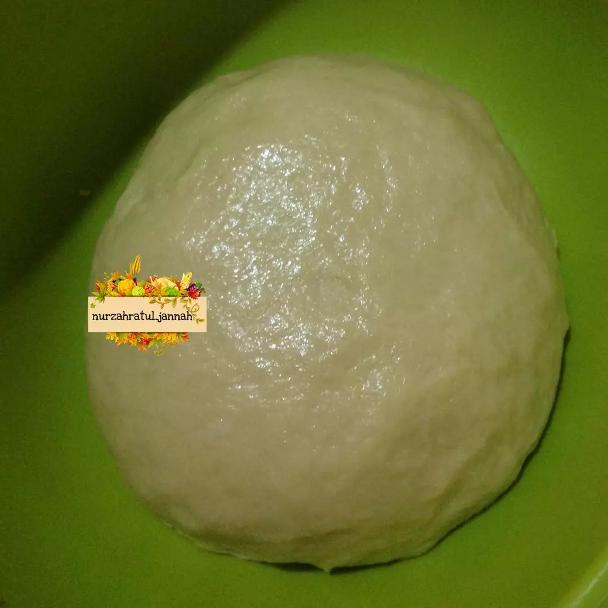
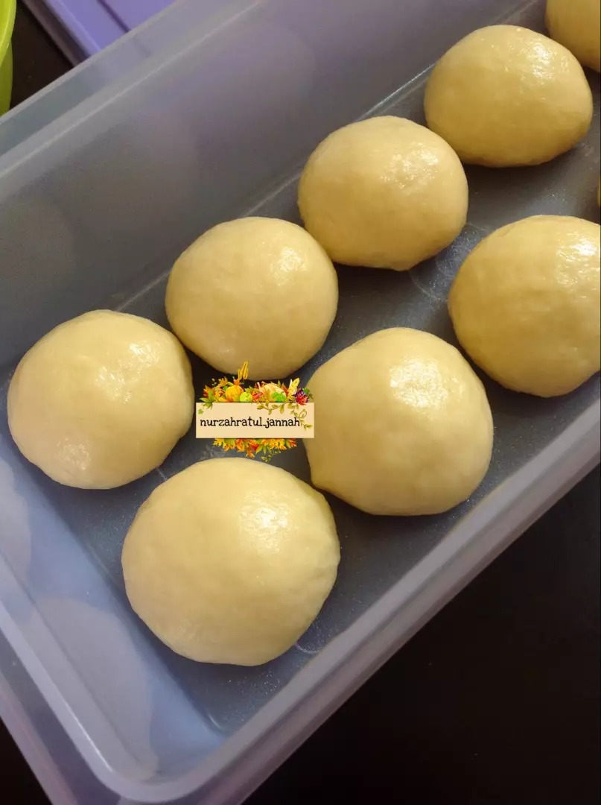
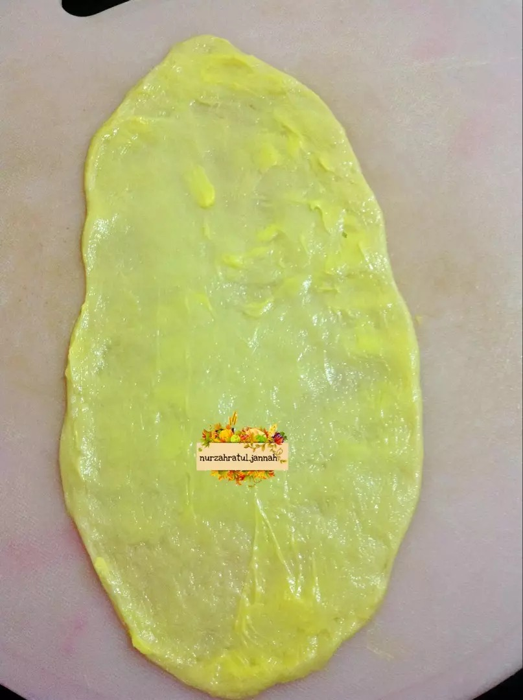
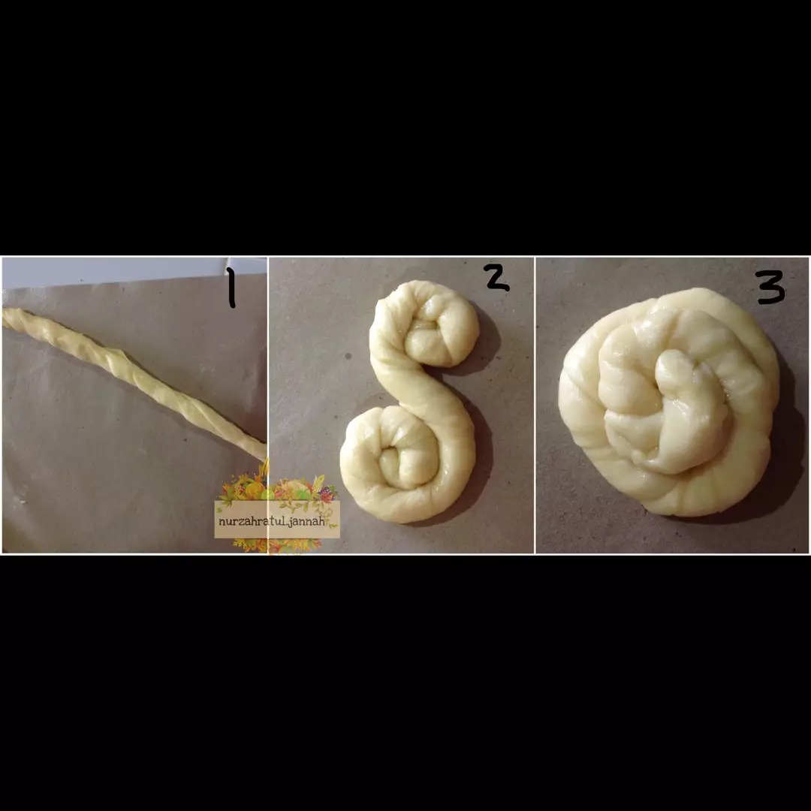
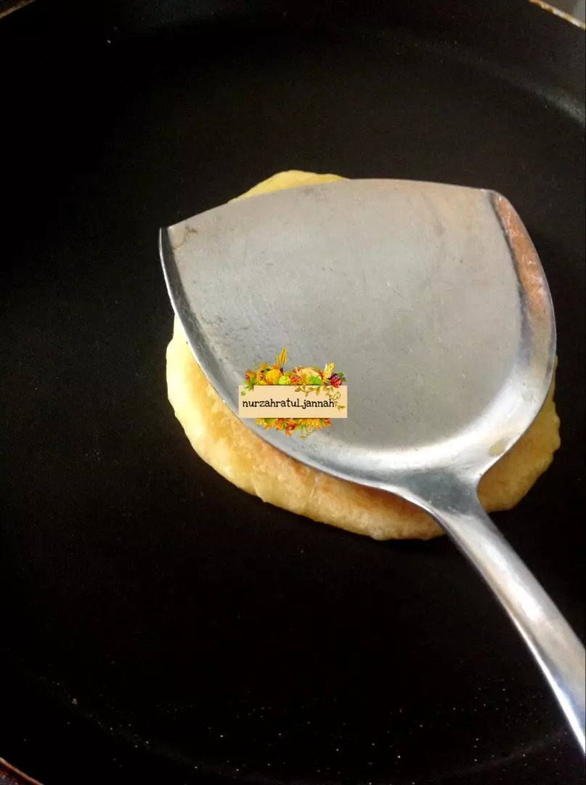
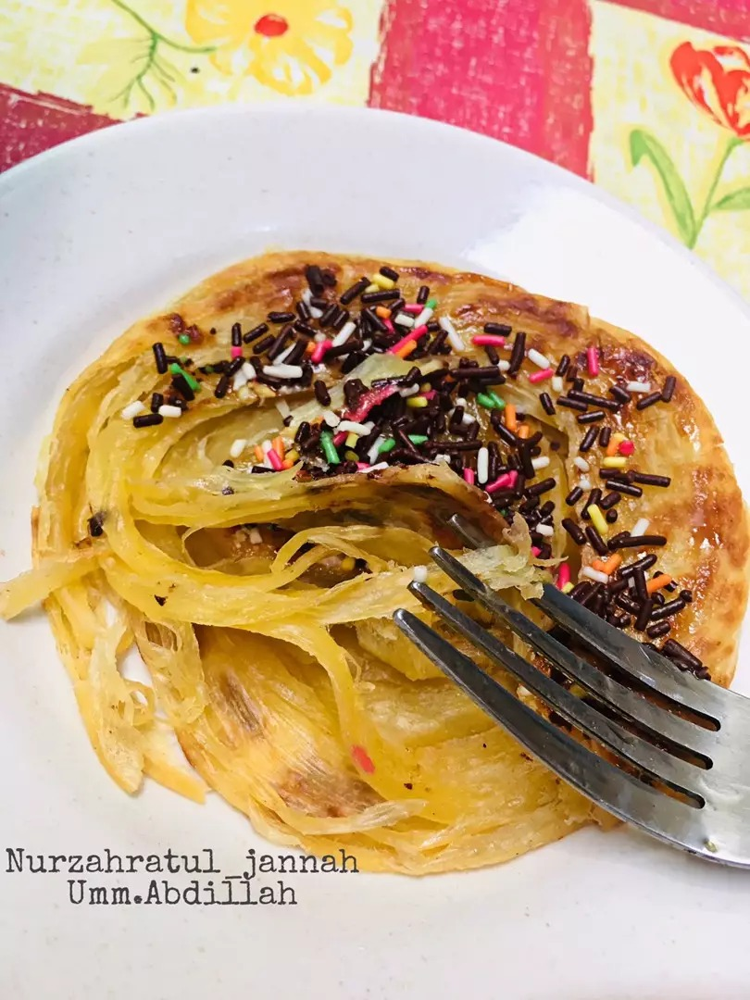

Resep Kue Maryam

Bahan-Bahan:
250 gr tepung terigu
3 sdm margarin,lelehkan
100 ml air hangat
2 sdm susu bubuk(optional)
1/2 sdt garam
margarin leleh untuk olesan
minyak untuk merendam
Langkah Langkah:
1.Siapkan wadah, campur air, minyak goreng dan telur, aduk hingga rata menggunakan wisk atau garpu

2.Masukkan tepung terigu, susu, dan garam, uleni sampai kalis

3.Bagi adonan sama rata, bentuk bulat-bulat, olesi margarin diseluruh bagian sampai rata (boleh pakai margari
cair/minyak goreng). Setelah itu tutup dengan plastik dan lap basah, diamkan selama 1 jam

4.Ambil satu adonan, pipihkan hingga tipis olesi dengan margarin secara merata

5.Lalu gulung perlahan sampai bentuk memanjang dan sedikit ditarik agar lebih panjang. Kemudian gulung melingkar
dengan arah berlawanan jadi seperti huruf 'S'[2]. ketika sudah bertemu ditengah, lalu tumpuk Jadi satu

6.Panaskan teflon, ambil adonan yang sudah di tumpuk jadi satu kedalam teflon, langsung pipihkan dengan cara
ditekan memutar menggunakan serokan penggorengan

7.Jika semua sisi sudah berwarna kuning kecoklatan, angkat dan lakukan kembali pada adonan berikutnya hingga
habis
